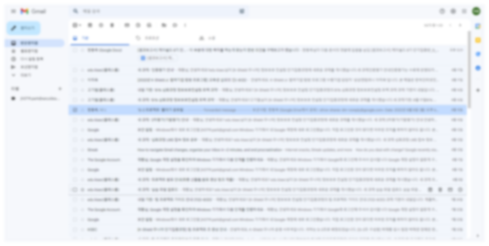
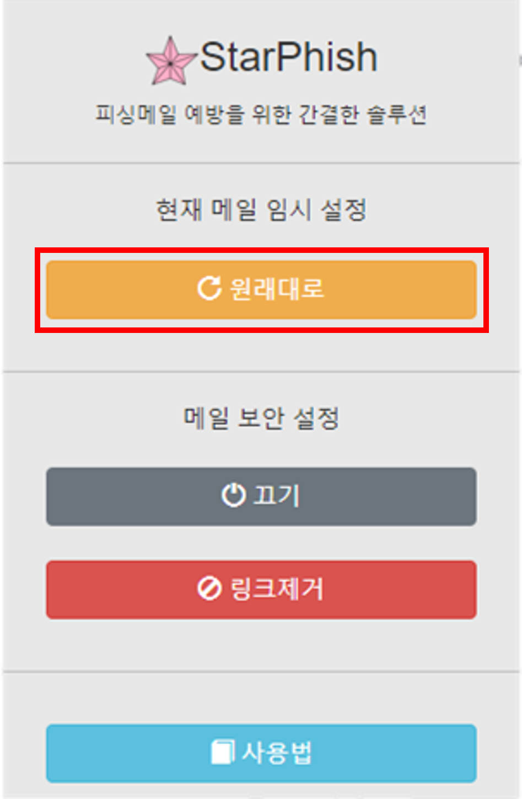

StarPhish 소개 및 매뉴얼
Introduction
낚시(fishing)를 하면 고기가 낚이기를 기대합니다.
해커의 피싱(Phishing)도 이와 같습니다.
이용자를 유혹해서 걸려들기를 희망하죠.
낚시 중 신호가 왔을 때 물고기가 아니라 불가사리가 낚여오면 실망스럽죠.
이처럼 StarPhish는 악의적인 Phishing 메일에 당하지 않겠다는 의지를 표명하는 이름입니다.
피싱 메일 피해를 방지하는 방법은 다양한 방법이 있지만
결국 네트워크에 종단에 있는 이용자가 경각심을 가지지 않는다면 근본적으로 해결되지 않습니다.
하지만 바쁜 업무 상황이나 습관적으로 메일을 이용하면서 항상 경각심을 가지기란 쉬운일은 아니죠.
악성메일을 보내는 해커도 이러한 점을 노려 무차별적인 타겟을 노리며 누군가가 걸려들기를 기다립니다.
그래서 StarPhish는 주기적인 예방교육을 초월하는 상시교육과
어떠한 상황에서도 경각심을 가지는 제로트러스트를 바탕으로 소프트웨어를 설계하였습니다.
Phishing에 대한 추가적인 설명은 아래의 링크들을 참조하세요.
KISA 인터넷 보호나라 KCert https://www.krcert.or.kr/hackingmail/illust1.do
NIST - Definition: Phishing https://www.nist.gov/itl/smallbusinesscyber/guidance-topic/phishing
이 글도 메일은 아니지만 검색 등으로 링크가 안전한지 확인해 보시는게 좋겠죠?
Usage
1
설치가 되셨다면 이 화면이 열리셨을 겁니다.
지금부터 StarPhish의 기능과 사용법을 설명 드리겠습니다.
2
기본적으로 StarPhish는 Gmail에서만 동작합니다.
Gmail에 접속한 뒤 StarPhish 확장버튼을 누르면
초기에는 다음과 같이 설정되어 있을 것 입니다.
가운데의 메일 보안 설정은 설치시 최초에는 링크제거로 설정됩니다.
해당 기능은 메일을 열 때 다른 페이지로 이동하는 하이퍼 링크를 제거하는 역할을 합니다.
피싱사이트로 유도하는 하이퍼 링크를 무심코 클릭하는것을 막아주죠.

메일함에서 링크가 있는 메일을 열고 링크를 눌러보면
링크가 의도한 페이지로 이동하지 않고,
링크에 마우스를 올렸을 때 경고 Tooltip을 띄워 줍니다.
3
메일의 링크를 불가피하게 사용해야 할 경우에는
메일의 출처 주소, 링크의 도메인 검색 등을 통해
메일의 안전함을 확인 하신 뒤에

위의 원래대로 버튼을 누르면 메일의 링크가 임시로 사용 가능한 상태로 변경됩니다.
다시 링크를 막고 싶으시면 보안 켜기 기능을 누르시면 됩니다.
4
StarPhish에서는 권장하지는 않지만,
기능을 끄셔야 할 경우 끄기 버튼을 누르시고 페이지를 새로고침 하시면 기능이 꺼집니다.
StarPhish와 함께 안전한 메일 사용이 되시길 바래요.